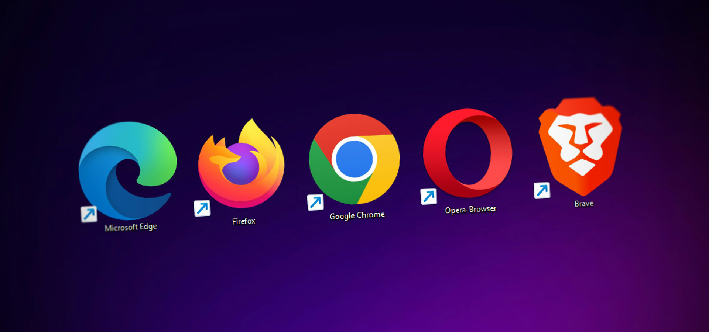
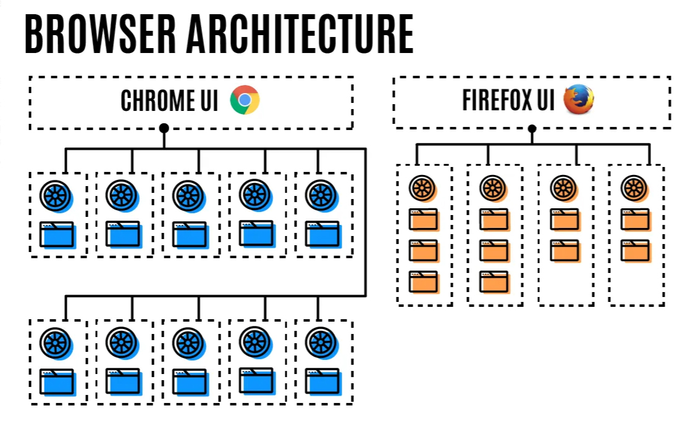

Jeewantha Lahiru
Game Developer

How web browsers use Processes and Threads
A process can be described as an application's executing program. A thread is the one that lives inside of a process and executes any part of its process's program. When you start an application, a process is created. The program might create thread(s) to help it do work, but that's optional.
A process can ask the Operating System to spin up another process to run different tasks. When this happens, different parts of the memory are allocated for the new process. If two processes need to talk, they can do so by using Inter Process Communication (IPC). Many applications are designed to work this way so that if a worker process get unresponsive, it can be restarted without stopping other processes which are running different parts of the application.
Which process controls what?
Browser: Controls the applications including address bar, bookmarks, back and forward buttons. Also handles the invisible, privileged parts of a web browser such as network requests and file access.
Renderer: Controls anything inside of the tab where a website is displayed.
Plugin: Controls any plugins used by the website, for example, flash.
GPU: Handles GPU tasks in isolation from other processes. it is separated into different process because GPUs handles requests from multiple apps and draw them in the same surface.
How google chrome use Processes and Threads
Chrome has a multi-process architecture and each process is heavily multi-threaded. The main goal is to keep the main thread (“UI” thread in the browser process) and IO thread (each process' thread for handling IPC) responsive. This means offloading any blocking I/O or other expensive operations to other threads.
Threads
Every chrome process has,
a main thread
- In the browser process (BrowserThread::UI): updates the UI
- In renderer processes (Blink main thread):runs most of Blink
an IO thread
- in the browser process (BrowserThread::IO): handles IPCs and network requests
- in renderer processes: handles IPCs.
and a pool of general-purpose threads.
How Firefox use Processes and Threads
Years ago, Mozilla made a fateful decision about the future of Firefox development, one that made it much more difficult to integrate multiprocessing into the existing browser. Roughly 10 years ago, the major way Firefox had distinguished itself compared with Internet Explorer was through its support for add-ons and extensions. But the same add-on abilities that had made the browser popular also made it difficult to add multiprocessor support. Mozilla therefore committed to transitioning away from its old add-on model and towards multi-browser web extension support, while simultaneously launching the Electrolysis project to create a new browser version that could support a multi-processing architecture.
Comparing Chrome and Firefox
Chrome and Firefox now both support multithreading, but they do it in different ways. In Chrome, each and every tab you open gets its own content process. Ten tabs, 10 processes. One hundred tabs, 100 processes. This approach maximizes perfomance, but you pay a heafty penalty in memory consumption and battery life. Firefox doesn't take this approach to the problem, but instead spins up to four content process threads by default. In Firefox, the first 4 tabs each use those 4 processes and additional tabs tun using threads within those processes. Multiple tabs within a process share the browser engine that already exists in memory, instead of each creating their own.
Mozilla claims that Firefox also uses dramatically less memory than other competing browsers, with Chrome using 1.77x more RAM than Firefox in 64-bit and 2.44x in 32-bit mode.
Why Chrome gets too hot when Firefox does not
While both Firefox and Chrome now run using multiple processes, Firefox does some things differently to avoid using up your computer's limited memory.
By default, Chrome creates a separate content process for each instance of a site that you visit. Open 10 different tabs with 10 sites in Chrome, and you'll have 10 different processes. Each of those processes has its own memory — with their own instance of the browser's engine. One open tab in Chrome typically consumes hundreds of megabytes of RAM. Chrome's liberal approach to creating processes can lead to very high memory usage.
On the other hand, Firefox's more conservative approach to using processes often results in Firefox using less memory than Chrome. By default, Firefox now creates up to 4 separate processes for web page content. So, your first 4 tabs each use those 4 processes, and additional tabs run using threads within those processes. Multiple tabs within a process share the browser engine that already exists in memory, instead of each creating their own.

Start with something simple and small, then expand over time. If people call it a 'toy' you're definitely onto something.